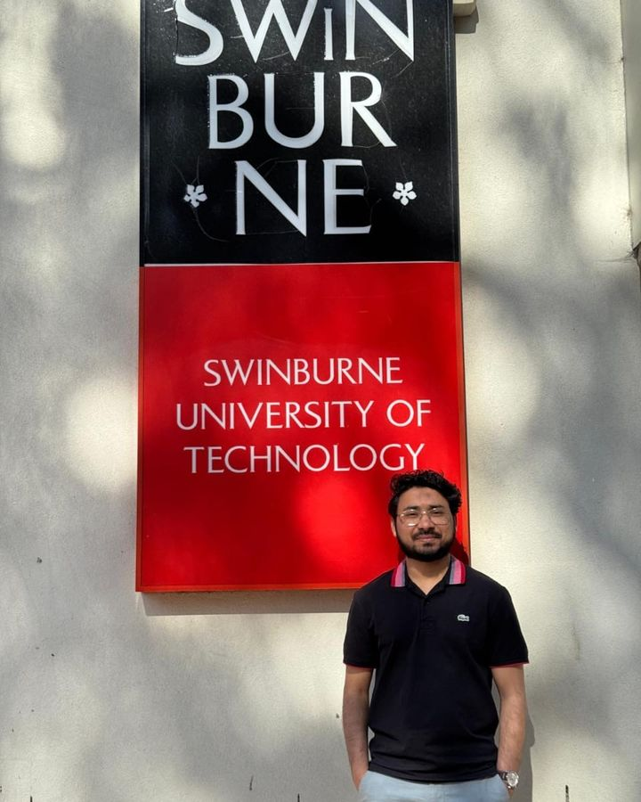

Mohammad Kamran Ikram
PhD researcher and sessional lecturer, Swinburne University of Technology, Melbourne
I study how electric cars and homes that share power with each other can keep the electricity grid steady as we move to net zero.
About me
I'm an electrical engineer finishing my PhD at Swinburne University in Melbourne. My work sits between research and industry. I've run grid connection studies for a 250 MW battery at Siemens, tested blackout recovery methods at CSIRO, and I teach smart grid design to engineering students.
Before coming to Australia, I spent several years at Aligarh Muslim University in India building and testing hardware that measures power flow in electricity networks. That work led to a published patent.

Right now
Latest papers
- 2026Coordinated operation and stability limits of grid-forming and grid-following inverters in power system restoration Energies. How solar and battery equipment can restart a grid after a blackout.
- 2026A review of electric vehicle integration in peer-to-peer energy networks World Electric Vehicle Journal. What we know so far about electric cars trading energy with neighbours.
Get in touch
I'm open to research collaborations, industry projects on EV charging and grid stability, and postdoc or research roles from 2027.